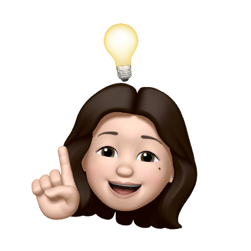

Jiho Han
UI Designer
Hi! Nice to see you here. I am a recent graduate of the New Media Arts Interface Design program at Kapiʻolani Community College with a passion for Design. I was born in Korea, then moved to Hawaiʻi during high school. When I was younger, my interests were in art and I enjoyed drawing. As I got older, I became captivated by design and now it is my main passion. Design is a vehicle to convey a message effectively to an audience; with careful attention to detail, you can offer a convenient and accessible experience. That is why I love design and chose the path of a UI Designer. Now, I am transferring to the University of Hawaiʻi at Manoa to continue my journey!